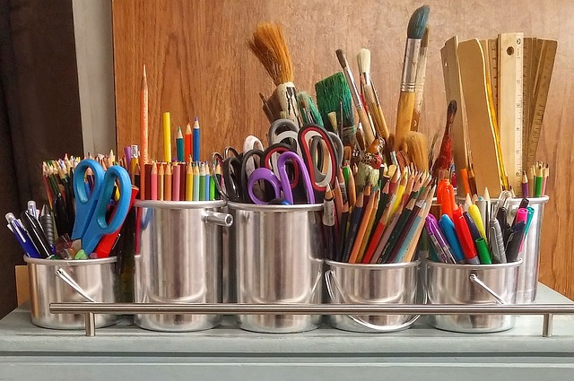

Här är du som ung med och bestämmer över verksamheten och vilka aktiviteter vi gör. Vår målgrupp är ungdomar mellan 10 till 20 år, men dörren är inte stängd för någon. Vi har öppen verksamhet onsdag - torsdag klockan 15-21 och var fjärde helg, fredag - lördag klockan 14-22 (veckorna 22, 26, 30, 34, 38, 42 osv).
Lokalerna är flexibla och vi jobbar tillsammans med dig för att genomföra dina idéer. Inget är omöjligt. I källaren har vi en fullutrustad replokal samt en studio. I vårt lilla café finns möjlighet att köpa något litet att äta och dricka.
Klicka här för att komma till vår hemsida 